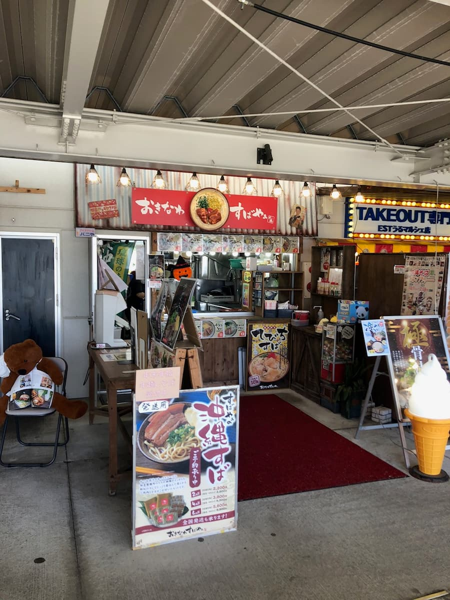
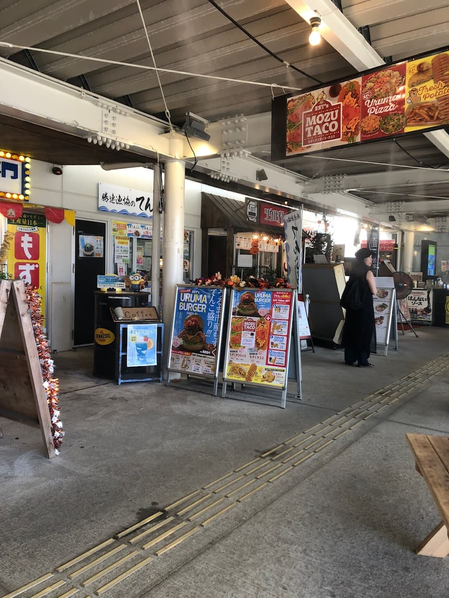
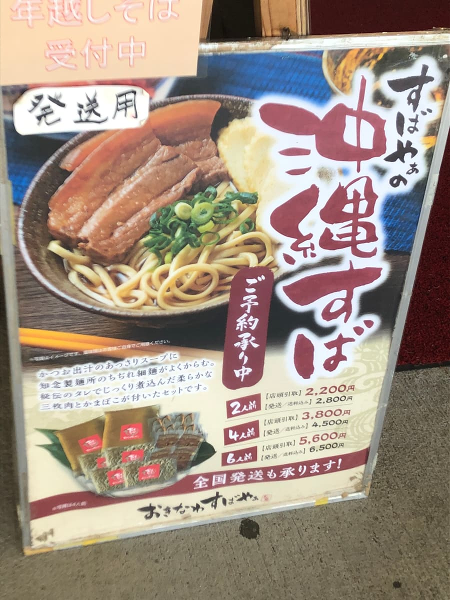
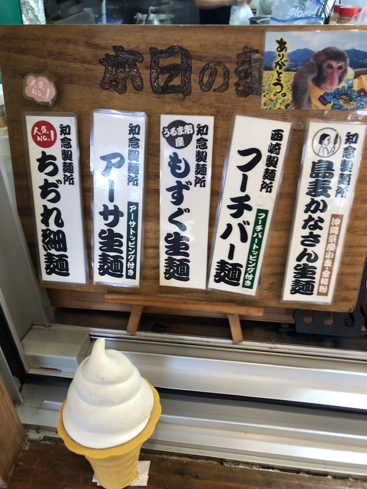
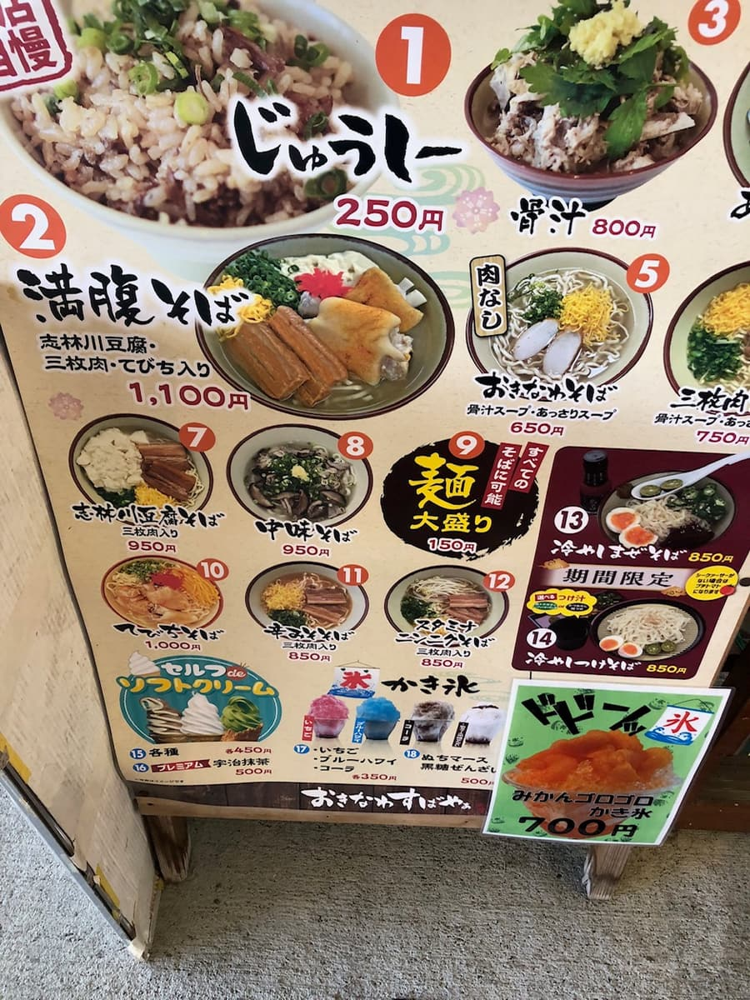
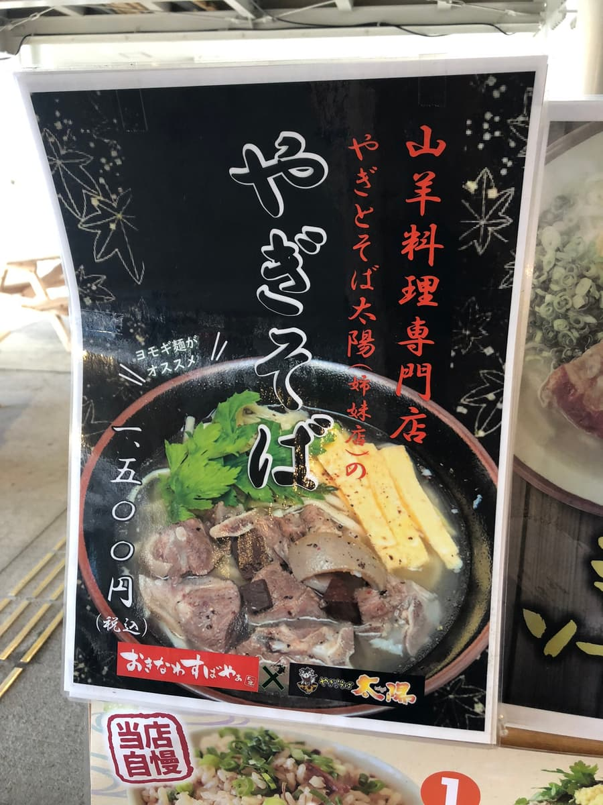
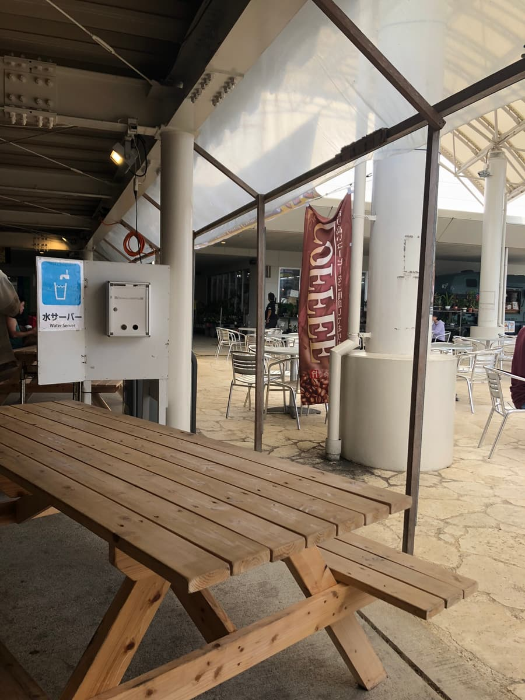
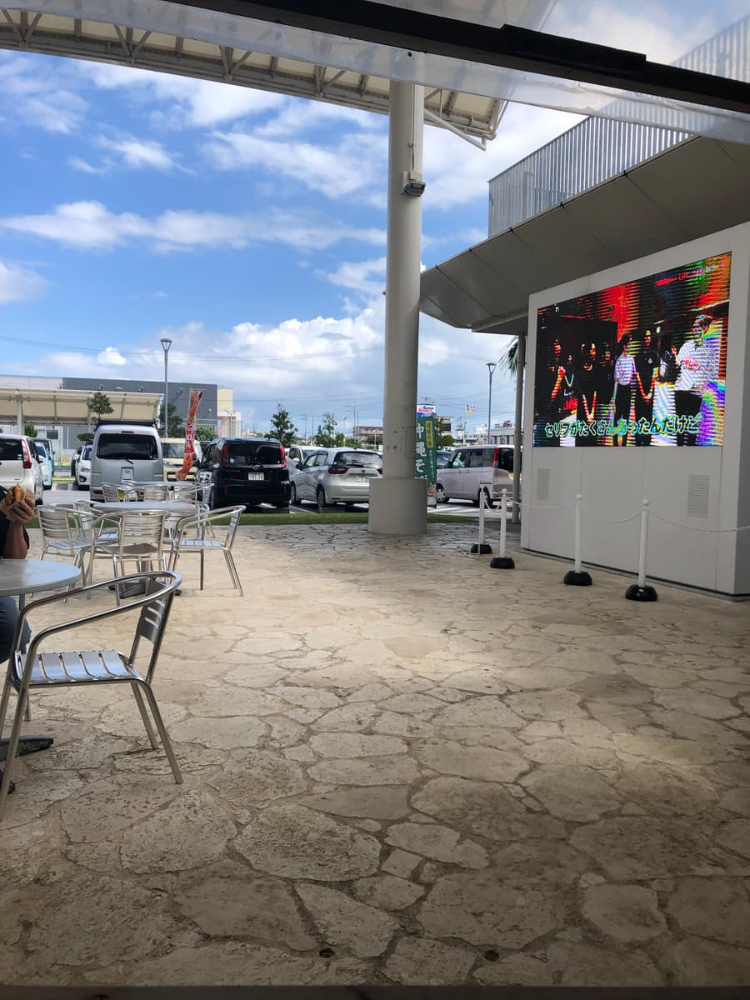
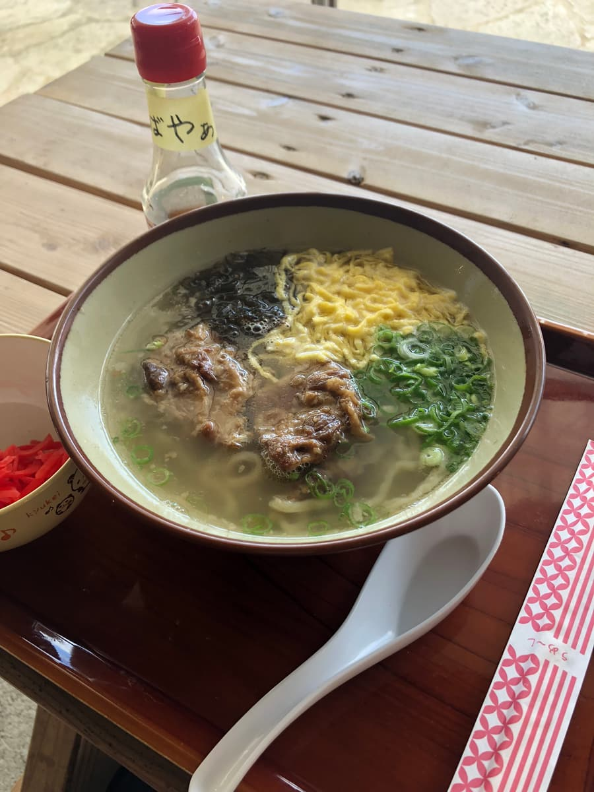
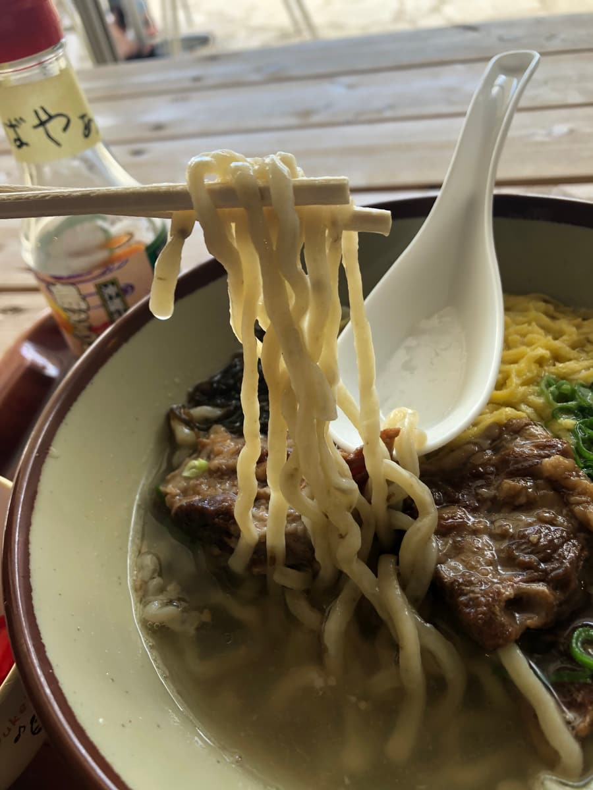

※這篇文章是用AI（Chat GPT 4o）生成後，再由我自己補寫了一部分😆
2024年10月吃的😄
這次造訪了宇流麻市「宇流麻市集」美食區內的「沖繩麵屋太陽」！

🌺美食區內有各式各樣的店家，每一間看起來都很好吃，讓人眼花撩亂呢😋。

從中選擇的當然是沖繩麵集章活動參加店家「沖繩麵屋太陽」的「軟骨排骨麵」。其實我平常都會點集章活動手冊上介紹的沖繩麵，但這間店介紹的是「山羊麵」，之前在名護市的「從前從前」吃完山羊麵後那種腥羶味的印象還很強烈，怎麼樣都沒辦法選(^0^;) 這次就放棄了(^0^;) 吃的時候覺得沒有怪味就是了(^0^;) 是吃完之後很在意😄




另外麵條選了「海蘊生麵」🎶。很期待這有點特別的麵的口感！
在有屋頂的戶外座位等麵的時候，舒服的風吹過來，心情超好☀️。天氣好的日子在這樣開放的空間吃飯，真的很舒服對吧。觀光的心情也一下子高漲起來⛱️。


那麼，期待已久的麵上桌了✨。碗裡有滿滿Q彈的軟骨排骨！湯頭是清澈的色澤，海蘊生麵看起來也很好吃🍜。「要開動了！」胸口充滿了期待感。

首先喝一口湯。豬骨底的高湯味道很明顯，是很有深度的味道😊。不過，整體的鹹味稍微偏重，喜好可能會兩極。不過，對喜歡重口味的人來說或許剛剛好！

接著吃「海蘊生麵」。是Q彈有彈性的口感，很有咬勁呢✨！不過，老實說「海蘊感」有點含蓄，風味偏淡吧？🤔 話雖如此，因為配料也有加海蘊，一起吃的話就能確實享受到海蘊。軟骨排骨🍖也軟嫩到入口即化😳
評分（9分/15分）：整體的感想，印象是「還算正常好吃」，不過再加上在戶外吃的開放感和整個美食區的熱鬧，度過了很開心的時光😊。另外，宇流麻市集還有很多其他美食，下次也想挑戰其他店家🍔🍣。
「沖繩麵屋太陽」是能輕鬆順道造訪、隨興享用沖繩麵的店🍜。去宇流麻市集的時候請一定要來看看喔！🌈
麵：★★★☆☆（3）
湯頭：★★★☆☆（3）
配料：★★★☆☆（3）